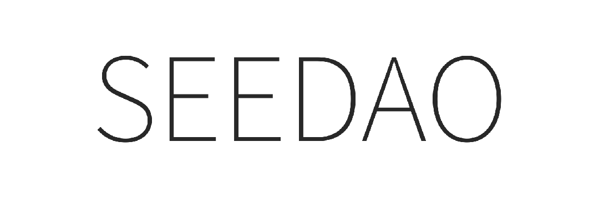
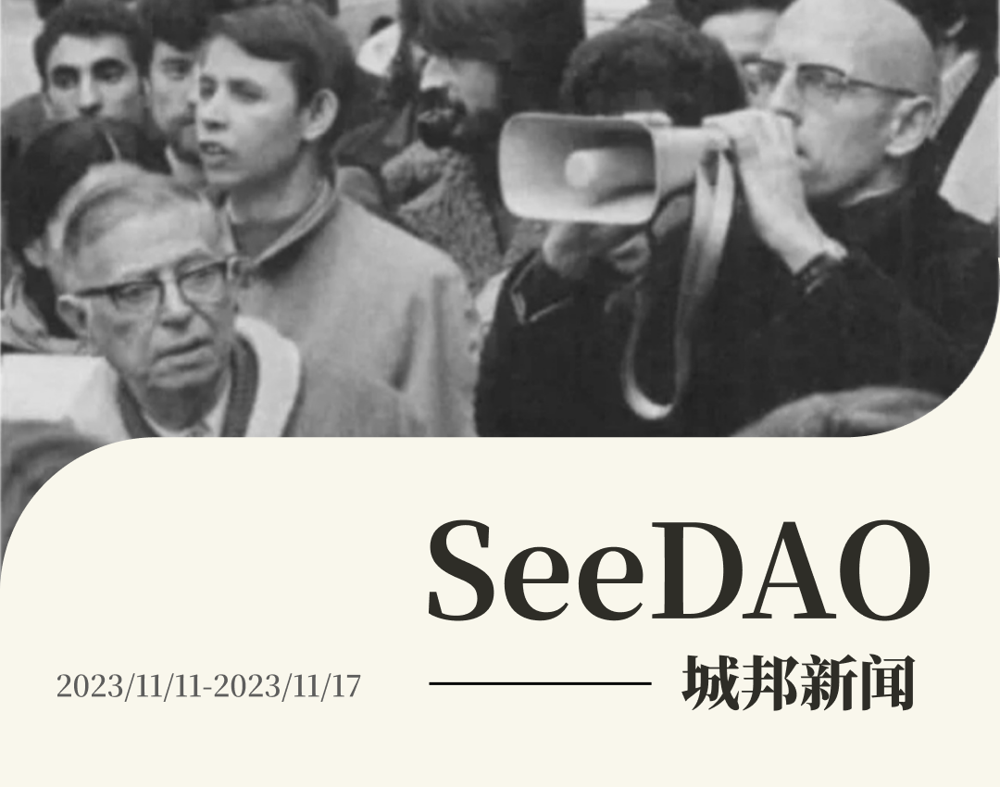
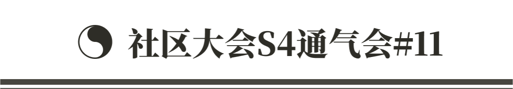
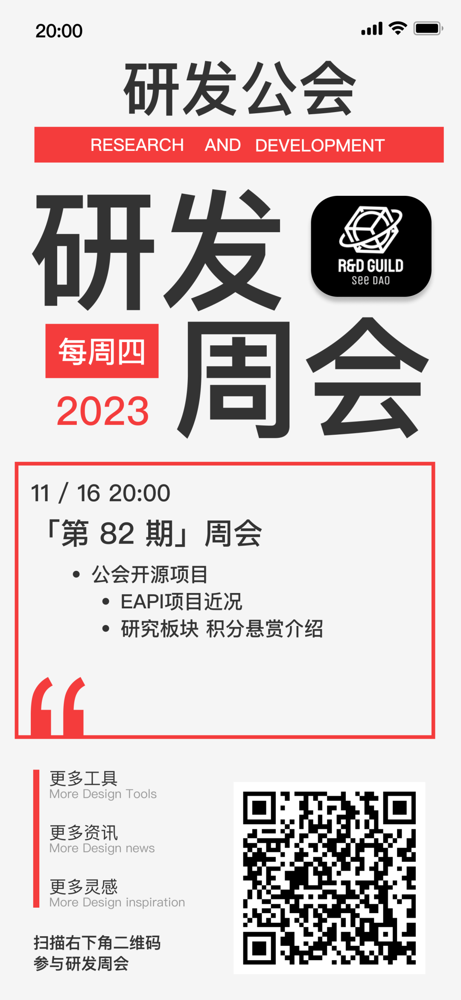

✦ S5 节点共识大会整体议程预告
✦ 节点共识大会时间线 沟通

✦ 媒体中心 S4 SBT 表单提交 / 统计 S4 市政厅伙伴计划积分
✦ 梳理过往较细的媒体中心工作记录，减少交接摩擦和信息 gap
✦ VI 持续跟进中 / 节点共识大会推文
✦ SeeDAO播客：全球华人社区生态发展与探讨
✦ 20城生日派对（大理相片视频）
✦ SeeDAO往事 约稿跟进 x Cascad3网页已建 (https://www.cascad3.com/seedao)（欢迎来看）
✦ SeeDAO x TonUP（Ton生态launchpad 项目）
✦ SeeDAO x SocialLayer (土耳其活动)
✦ SeeDAO x Go2mars（Gamefi 脱口秀）
✦ SeeDAO x ReFiDAO HK
✦ 日常维护运维
✦ 邮箱注册，还有其他几条线没有创立 Doing
✦ Notion 公共项目/公会 迁移至 Teamspace （从公会开始试运行) Doing

✦ 本周新增 P1 提案：Vitalik英文共读会 (002期)
/ 发起人：定慧
/ https://discord.com/channels/841189467128594442/1173897055337447474/1173897055337447474
✦ 本周两个 P1 提案结项：
/ P1提案：Weeping Club On Sunday，情绪创作分享工作坊和探索中国公链cfx生态提案
https://forum.seedao.xyz/thread/p1-p1-weeping-club-on-sunday-cfx-47288
/ P1结项：“P1提案：Vitalik英文共读会 (001期) ”
/ https://forum.seedao.xyz/thread/p1-p1-vitalik-001-47314
✦ 本周 P3 提案《SIP-79：共同打造中文 web3 媒体》结项通过投票。已完成积分登记

✦ 翻译一本书｜译者团队🔥
/ 筹建与面试进展情况
/ 机制迭代升级：选拔（经历、中英文水平、可投入的精力时间等）、退出、队长、奖惩、风控，11月底前出一个1.0版本
✦ 翻译一本书｜书单🔥
/ 选书会筹备中
/ SeeDAO 里阅读量比较大的大佬推荐一波
/ 征集：项目名称、推荐书目，采用后将奖励 1000 积分
✦ 翻译公会｜Theseus《第 8 关：Web3 游戏中受诅咒的可持续经济》
✦ 翻译公会｜Usopp《利用人工智能和区块链技术的智慧城市的演变 》
✦ 分享主题：NFT 交易生态的前世今生
/ 分享嘉宾：十四君｜十四君公众号主理人、前腾讯安全高级工程师、Github 7K star
✦ 投研公会 Ryan｜SeeDAO | 稳定币赛道分享

✦ EAPI项目近况介绍（开发环境搭建完毕）
✦ 研发公会研究课题介绍｜悬赏列表:
https://github.com/SeeDAO-DevGuild/Research/issues
✦ 研发公会第82期周会


✦ SeeUinLondon：Event Alert 🔥
✦ SeeDAO101 深夜电台 第3期 - 真的牛回了？？
—